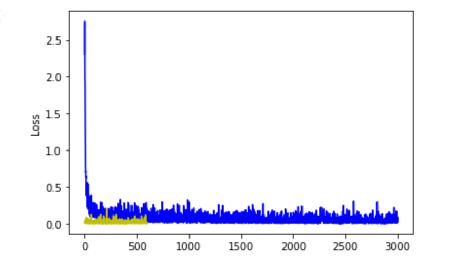
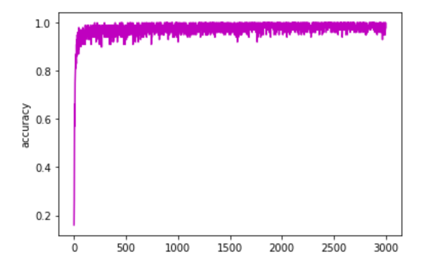

PyTorch è un framework che ci permette di utilizza i tensor e dei moduli per creare dei
modelli di Neural Network.
Tensor in PyTorch
%matplotlib inline
from __future__ import print_function
import torch
import numpy as np
y = torch.rand(3,5)
x = torch.empty(3,5)
print(x.size())
result = torch.empty(3, 5)
torch.add(x, y, out=result)
print(result)
torch.Size([3, 5])
tensor([[8.0163e-01, 5.6948e-01, 7.2250e+28, 7.3528e-01, 9.2911e-01],
[7.5878e+31, 3.0600e+32, 5.0840e+31, 6.4600e+19, 4.4721e+21],
[7.2070e+22, 4.7428e+30, 7.8670e-02, 6.4610e+19, 4.6184e-01]])
Da numpy a tensor e viceversa
a = np.zeros(5)
b = torch.from_numpy(a)
#collegamento tra array originale e tensor utilizzando parametri sottostanti
np.add(a, 5, out=a)
print(a)
print(b)
[5. 5. 5. 5. 5.]
tensor([5., 5., 5., 5., 5.], dtype=torch.float64)
AUTOGRAD
Thankfully, we can use automatic differentiation to automate the computation of
backward passes in neural networks.
The autograd package in PyTorch provides exactly
this functionality.
When using autograd, the forward pass of your network will define a
computational graph; nodes in the graph will be Tensors, and edges will be functions that
produce output Tensors from input Tensors.
Backpropagating through this graph then allows you
easily compute gradients.
x = torch.randn(bs, input, requires_grad=False) # se False non si vuole che gradients venga calcolato automaticamente
y = torch.randn(bs, out, requires_grad=False)
dove bs indica numero batch size , input numero layer inseriti e output numero layer che si
ottengono dal modello con y che è il risultato e x i dati inseriti.
weights1 = torch.randn(input, hidden, device=device, dtype=dtype, requires_grad=True)
weights2 = torch.randn(hidden, output, device=device, dtype=dtype, requires_grad=True)
dtype=float, device=cpu/gpu/tpu requires_grad calcolo automatico dei gradients
y_pred = x.mm(weights1).clamp(min=0).mm(weights2) # con questa operazione otteniamo la previsione
del risultato atteso(forward)
loss = (y_pred - y).pow(2).sum() # qui otteniamo la perdita tra valore differenza
loss.backward() # calcola i gradients per i tensor definiti con requires_grad=True
e li aggiorna con i nuovi valori per noi weights1 e weights2 e non x e y
with torch.no_grad():
usato quando nel context manager si usano tensor con requires_grad=True e non si applica
backward quindi si calcolano gradients manualmente infatti
weights1 e weights2 -= learning_rate * weights1.grad e weights2.grad e poi si azzerano i weights1/2.grad con
il comando weights1/2.grad.zero_() e si completano le iterazioni previste.
NN module
In PyTorch, i package nn sono dei moduli che contengono dei Layer come in TensorFlow per rendere più
agevole la costruzione di un modello di NN.
Ogni layer riceve in input 1 o più tensor e restituisce
altrettanti tensor in output.
Ci sono inoltre anche altre funzioni come le loss function.
OPTIM package
Questo package ci fornisce diverse funzioni contenti i diversi metodi di optimizer
come Stochastic Gradient Descent, AdaGrad, RMSProp, Adam ecc.
ESEMPIO MODELLO CON NN E OPTIM
creo input ed output tensor
model = torch.nn.Sequential(
torch.nn.Linear(input_layer , hidden_layer),
torch.nn.ReLU(),
torch.nn.Linear(hidden_layer, output_layer),
)
loss_function = torch.nn.nn.CrossEntropyLoss()
learning_rate = 0.001
optimizer = torch.optim.Adam(model.parameters(), lr=learning_rate)
iteratore
y_pred = model(x)
loss = loss_function(y_pred, y)
optimizer.zero_grad() #calcolo gradients
# Backward - calcolo gradient in base risultato loss function
loss.backward()
# Optimizer update dati in base ai parametri del modello
optimizer.step()
PyTorch: Custom nn Modules
class custumNet(torch.nn.Module):
def __init__(self, input_dim, hidden_dim, out_dim):
super(custumNet, self).__init__()
self.l1 = torch.nn.Linear(input_dim, hidden_dim)
self.l2 = torch.nn.Linear(hidden_dim, out_dim)
def forward(self, x):
"""
x è input tensor e y_pred è output tensor
"""
relu = self.l1(x).clamp(min=0)
y_pred = self.l2(relu)
return y_pred
model = custumNet(input_dim, hidden_dim, out_dim)
Nella sezione sottostante analizziamo un esempio di Convolutional Neural Network creato con PyTorch
costruendo una class sia in sequentional che functional mode.
import torch.nn as nn
import torch.nn.functional as F
import torch.optim as optim
# sequentional model
class SeqConvNet(nn.Module):
def __init__(self):
super(SeqConvNet, self).__init__()
self.l1 = nn.Sequential(
nn.Conv2d(1, 32, kernel_size=3, stride=1, padding=2),
nn.ReLU(),
nn.MaxPool2d(kernel_size=2, stride=2))
self.l2 = nn.Sequential(
nn.Conv2d(32, 64, kernel_size=3, stride=1, padding=2),
nn.ReLU(),
nn.MaxPool2d(kernel_size=2, stride=2))
self.l3 = nn.Dropout()
self.l4 = nn.Linear(7 * 7 * 64, 1000) # full connection layer
self.l5 = nn.Linear(1000, 10) # full connection layer
def forward(self, x): # x = input data
out = self.l1(x)
out = self.l2(out)
out = out.reshape(out.size(0), -1)
out = self.l3(out)
out = self.l4(out)
out = self.l5(out)
return out
# functional model
class Model(nn.Module):
def __init__(self):
super(Model, self).__init__()
self.l1 = nn.Conv2d(1, 10, kernel_size=5)
self.l2 = nn.Conv2d(10, 20, kernel_size=5)
self.l3 = nn.Dropout2d(0.2)
self.l4 = nn.Linear(300, 50)
self.l44 = nn.Dropout2d(0.2)
self.l5 = nn.Linear(50, 10)
def forward(self, x):
x = F.relu(F.max_pool2d(self.l1(x), 2))
x = F.relu(F.max_pool2d(self.l3(self.l2(x)), 2))
x = x.view(-1, 320)
x = F.relu(self.l4(x))
x = F.dropout(x, training=self.training)
x = self.l5(x)
x = self.l44(x)
return F.log_softmax(x)
model = Model()
optimizer = optim.SGD(model.parameters(), lr=learning_rate,
momentum=momentum)
def train(epoch):
model.train()
for batch_idx, (data, target) in enumerate(train_loader):
optimizer.zero_grad()
output = model(data)
loss = F.nll_loss(output, target)
loss.backward()
optimizer.step()
if batch_idx % log_interval == 0:
print('Train Epoch: {} [{}/{} ({:.0f}%)]\tLoss: {:.6f}'.format(
epoch, batch_idx * len(data), len(train_loader.dataset),
100. * batch_idx / len(train_loader), loss.item()))
train_losses.append(loss.item())
train_counter.append(
(batch_idx*64) + ((epoch-1)*len(train_loader.dataset)))
def test():
model.eval()
test_loss = 0
correct = 0
with torch.no_grad() :
for data, target in test_loader:
output = model(data)
test_loss += F.nll_loss(output, target, size_average=False).item()
pred = output.data.max(1, keepdim=True)[1]
correct += pred.eq(target.data.view_as(pred)).sum()
test_loss /= len(test_loader.dataset)
test_losses.append(test_loss)
print('\nTest: Avg. loss: {:.4f}, Accuracy: {}/{} ({:.0f}%)\n'.format(
test_loss, correct, len(test_loader.dataset),
100. * correct / len(test_loader.dataset)))
for epoch in range(1, n_epochs + 1):
train(epoch)
test()
Vediamo come costruire un layer lineare inserendo i dati a nostro piacere confermando però
i metodi init e forward.
Inserendo il layer sottostante nel modello presentato in precedenda come
fc2, secondo full connected layer si ottiene una accuracy nella fase di test del 99,02%.
Questa la struttura del modello creato :
ConvNet(
(layer1): Sequential(
(0): Conv2d(1, 32, kernel_size=(5, 5), stride=(1, 1), padding=(2, 2))
(1): ReLU()
(2): MaxPool2d(kernel_size=2, stride=2, padding=0, dilation=1, ceil_mode=False)
)
(layer2): Sequential(
(0): Conv2d(32, 64, kernel_size=(5, 5), stride=(1, 1), padding=(2, 2))
(1): ReLU()
(2): MaxPool2d(kernel_size=2, stride=2, padding=0, dilation=1, ceil_mode=False)
)
(drop_out): Dropout(p=0.5, inplace=False)
(fc1): Linear(in_features=3136, out_features=1000, bias=True)
(fc2): CustomLayer()
)
class CustomLayer(nn.Module):
""" Custom Linear layer """
def __init__(self, in_dim, out_dim):
super().__init__()
self.in_dim, self.out_dim = in_dim, out_dim
weights = torch.Tensor(out_dim, in_dim)
self.weights = nn.Parameter(weights)
bias = torch.Tensor(out_dim)
self.bias = nn.Parameter(bias)
# ora si inizializzano weights(w) e biases(b)
nn.init.kaiming_uniform_(self.weights, a=math.sqrt(5)) # weight init
fan_in, _ = nn.init._calculate_fan_in_and_fan_out(self.weights)
bound = 1 / math.sqrt(fan_in)
nn.init.uniform_(self.bias, -bound, bound) # bias init
def forward(self, x):
wx= torch.mm(x, self.weights.t())
return torch.add(wx, self.bias) # w * x + b cost function
plt.plot(loss_list,'b')
plt.plot(loss_test,'y')
plt.ylabel('Loss')
plt.show()

plt.plot(acc_list,'m')
plt.ylabel('accuracy')
plt.show()
